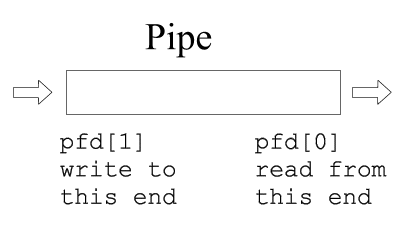

Session 4
Problems #2: Process management

Pipes
int data = 4;
int pfd[2];
pipe(pfd);

Pipes
write(pfd[1], &data, sizeof(data));
read (pfd[0], &data, sizeof(data));
Pipes
pipe(pfd);
pid_t pid = fork();

Pipes
pipe(pfd);
pid_t pid = fork();
Pipes
// Parent
close(pfd[0]);
// Child
close(pfd[1]);
Problem #5
- What does the program? What it will output and in which order?
- Explain its programming errors, its impacts and give a possible solution
Problem #6
- Explain its execution step by step and what it will output
Problem #7
Write a C program that implements the following command:
ls | grep test > output.dat
Use the forkexec system call
Problem #8
There is a users command located in the /bin directory. This command prints in the standard output the name of the connected users. It also prints the same output in the channel 4.
Write a C program that implements the following command:
users 2> errors.dat 4> connected.dat | wc -l
Note: 2> is a redirection of descriptor 2 (stderr)
Note: 4> is a redirection of descriptor 4
<That's all!>